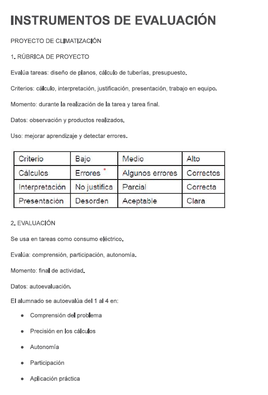
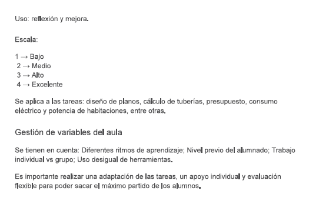

Texto


CRITERIOS DE EVALUACIÓN ASOCIADOS A LAS TAREAS
Relacionamos tareas con criterios de evaluación
TAREA
1 ¿Por qué enfría un aire acondicionado? Observar un equipo real y formular hipótesis sobre su funcionamiento.El alumnado observa un equipo de aire acondicionado en funcionamiento y responde:
¿Por qué sale aire frío?
¿Qué partes intervienen?
¿Qué ocurre si cambia la temperatura exterior?
Grupos de 3 alumnos
1 sesión de 60 minutos
Vídeo + simulador básico (YouTube + GeoGebra)
TAREA
2 ¿Cómo afecta la temperatura al rendimiento?
El alumnado mide: Temperatura de entrada/salida, Tiempo de enfriamiento
Luego: Registra datos, Hace una tabla y Saca conclusiones.
Comprueban si sus hipótesis iniciales eran correctas.
Trabajo en parejas
2 sesiones de 60 minutos
Hoja de cálculo (Excel o Google Sheets)
TAREA
3 ¿Qué sistema de climatización es más eficiente?
Se plantean dos sistemas: Split y un Sistema centralizado
El alumnado: Investiga, Formula hipótesis, Calcula consumo, Justifica cuál es mejor
Deben explicar y defender su decisión.Grupos de 4
3 sesiones de 60 minutos
Padlet o Canva (para presentación)
PARA LAS TAREAS 1, 2 Y 3 USAREMOS ESTE CRITERIO DE EVALUACIÓN
2.1. Realizar observaciones sobre el entorno cotidiano, plantear preguntas e hipótesis que puedan ser respondidas o contrastadas utilizando los métodos científicos, para alcanzar la capacidad de realizar observaciones, formular preguntas e hipótesis y comprobar la veracidad de las mismas mediante el empleo de la experimentación, el análisis de los resultados y utilizando las herramientas y normativas que sean convenientes en cada caso, explicando fenómenos naturales y realizando predicciones sobre estos.
TAREA
4. Cálculo de consumo eléctrico de un equipo
El alumnado calcula cuánto consume un aire acondicionado en un día:Datos: potencia (kW) y horas de uso, Operación: multiplicación
Interpretación: coste aproximado
Trabajo individual
1 sesión de 60 minutos
Calculadora o Google Sheets
TAREA
5 ¿Qué habitación necesita más potencia? se comparan dos habitaciones: Calculan superficie (m²), Relacionan con potencia necesaria. Deciden cuál necesita más climatización
Por parejas
1 sesión de 60 minutos
Hoja de cálculo o calculadora
6 Presupuesto de instalación básica
El alumnado recibe precios: Equipo, Instalación,Materiales Deben: Sumar costes, Calcular presupuesto total, Explicar el resultado
Grupos de tres alumnos
2 sesión de 60 minutos
Excel / Canva (para presentar presupuesto)
TAREA
6. Cálculo de tuberías necesarias
Se debe medir longitudes, sumar metros de tubería e Interpretar resultado (material necesario)
Por Parejas
1 sesión de 60 minutos
Regla + papel cuadriculado o GeoGebra
PARA LAS TAREAS 4, 5 Y 6 USAREMOS ESTE CRITERIO DE EVALUACIÓN
STEM1 Resolver problemas sencillos de la vida cotidiana utilizando operaciones matemáticas básicas, interpretando los resultados obtenidos y explicando el procedimiento seguido.